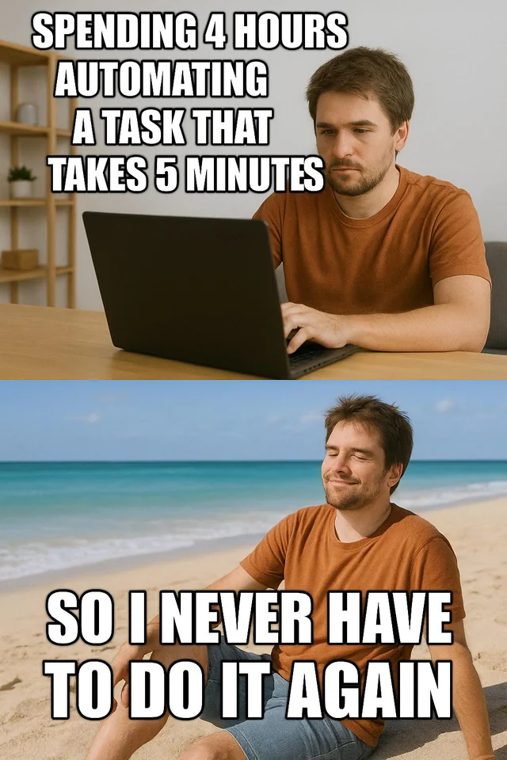

The Power of Browser DevTools
For developers, designers, and product owners curious to debug, inspect, and optimize smarter.
What will we do today?
- Quick & easy DevTools productivity tips
- Live debugging on the VLK website
- Follow along > rebeccadavidsson.com/devtools
Opening DevTools
- Windows: F12 or Ctrl + Shift + I
- Mac: Cmd + Opt + I
Why Master DevTools?
- Efficiency
- Production Quality Assurance
- Lower the Mean Time to Recovery (MTTR)
1. Console, Elements & Productivity
The Quickest Fix
Animation Tab
Use the Animations panel to inspect, slow down, and manipulate animations on your page.
Animation Tab
The Console
console.log('Hello from the Console!');
document.querySelector('#consoleButton').style.background = 'orange';Use $0 to reference the element currently selected in Elements
panel.
The Console: Live Expressions

Monitor window.location.href, or window.localStorage
Performance Tab
- Goal: find long tasks that cause UI jank.
- Method: trace slow renders back to function calls.
Status: Ready to Test
Rendering
- Dark Mode: Use Rendering > "Emulate CSS media feature prefers-color-scheme" to force dark/light themes.
-
Quick Edit: Run
document.designMode = 'on'in the Console to edit page text directly. -
Use the Command Palette (Cmd/Ctrl + Shift + P):
- Example: capture full size screenshots.
2. Sources & Debugging

Debugging Appearance
- Solution 1: Right-click the parent > ‘Break on…’ > Subtree modification.
- Solution 2: add a
debugger;statement - But an even better solution...
Snippets: Custom JS Library in DevTools
Snippets: Custom JS Library in DevTools
Go to Sources > Snippets > New snippet.
// Use the global variable you just created
const targetNode = temp1;
const config = { childList: true, subtree: true };
// CHANGE THIS to the tooltip's class
const targetClassName = 'ugly-tooltip-box';
const callback = function(mutationsList, observer) {
for (const mutation of mutationsList) {
if (mutation.type === 'childList') {
// Check newly added nodes
mutation.addedNodes.forEach(node => {
// Check if it's an element
if (node.nodeType === 1) {
// Check if the node itself has the class
if (node.classList.contains(targetClassName)) {
console.log('Target class found on added element:', node);
debugger; // PAUSE HERE!
}
// Check if any descendants of the added node have the class
const matchingDescendants = node.querySelectorAll(`.${targetClassName}`);
if (matchingDescendants.length > 0) {
console.log('Target class found on descendant:', matchingDescendants);
debugger; // PAUSE HERE!
}
}
});
}
}
};
// --- STEP 3: Start Observing ---
// Create an instance of the observer
const observer = new MutationObserver(callback);
// Start observing the target node for configured mutations
observer.observe(targetNode, config);
console.log(`MutationObserver started on ${targetNode.id || targetNode.tagName}. Waiting for class: ${targetClassName}`);
Snippets: Custom JS Library in DevTools
Go to Sources > Snippets > New snippet.
// allcolors.js
// https://github.com/bgrins/devtools-snippets
// Print out CSS colors used in elements on the page.
(function () {
// Should include colors from elements that have a border color but have a zero width?
var includeBorderColorsWithZeroWidth = false;
var allColors = {};
var props = ["background-color", "color", "border-top-color", "border-right-color", "border-bottom-color", "border-left-color"];
var skipColors = {
"rgb(0, 0, 0)": 1,
"rgba(0, 0, 0, 0)": 1,
"rgb(255, 255, 255)": 1
};
[].forEach.call(document.querySelectorAll("*"), function (node) {
var nodeColors = {};
props.forEach(function (prop) {
var color = window.getComputedStyle(node, null).getPropertyValue(prop),
thisIsABorderProperty = (prop.indexOf("border") != -1),
notBorderZero = thisIsABorderProperty ? window.getComputedStyle(node, null).getPropertyValue(prop.replace("color", "width")) !== "0px" : true,
colorConditionsMet;
if (includeBorderColorsWithZeroWidth) {
colorConditionsMet = color && !skipColors[color];
} else {
colorConditionsMet = color && !skipColors[color] && notBorderZero;
}
if (colorConditionsMet) {
if (!allColors[color]) {
allColors[color] = {
count: 0,
nodes: []
};
}
if (!nodeColors[color]) {
allColors[color].count++;
allColors[color].nodes.push(node);
}
nodeColors[color] = true;
}
});
});
function rgbTextToRgbArray(rgbText) {
return rgbText.replace(/\s/g, "").match(/\d+,\d+,\d+/)[0].split(",").map(function(num) {
return parseInt(num, 10);
});
}
function componentToHex(c) {
var hex = c.toString(16);
return hex.length == 1 ? "0" + hex : hex;
}
function rgbToHex(rgbArray) {
var r = rgbArray[0],
g = rgbArray[1],
b = rgbArray[2];
return "#" + componentToHex(r) + componentToHex(g) + componentToHex(b);
}
var allColorsSorted = [];
for (var i in allColors) {
var rgbArray = rgbTextToRgbArray(i);
var hexValue = rgbToHex(rgbArray);
allColorsSorted.push({
key: i,
value: allColors[i],
hexValue: hexValue
});
}
allColorsSorted = allColorsSorted.sort(function (a, b) {
return b.value.count - a.value.count;
});
var nameStyle = "font-weight:normal;";
var countStyle = "font-weight:bold;";
function colorStyle(color) {
return "background:" + color + ";color:" + color + ";border:1px solid #333;";
};
console.group("Total colors used in elements on the page: " + window.location.href + " are " + allColorsSorted.length);
allColorsSorted.forEach(function (c) {
console.groupCollapsed("%c %c " + c.key + " " + c.hexValue + " %c(" + c.value.count + " times)",
colorStyle(c.key), nameStyle, countStyle);
c.value.nodes.forEach(function (node) {
console.log(node);
});
console.groupEnd();
});
console.groupEnd("All colors used in elements on the page");
})();
Conditional Breakpoints
Conditional Breakpoints: Right-click a line number to set an expression that pauses execution only when a state is met.
outputElement.style.color = userId === 999 ? 'red' : 'white';
Sources Tab: Naming Anonymous Code with `#sourceURL`
Debug inlined, evaluated, or generated code as if it were a real file.
- The Problem: Minified or inlined scripts/styles are attributed to vague line numbers.
- The Solution: The `//# sourceURL` directive creates a virtual file name.
- Advantage: Stack traces, breakpoints, and the Elements panel all link to clean, named source files.
Sources Tab: #sourceURL
Add the //# sourceURL directive to your file
Inspect this minified CSS.
Inspect unminified CSS source
Coverage: Optimizing Azure Production Bundles
Analyze byte-level usage to eliminate dead code and reduce client bundle size.
- Goal: Identify CSS and JavaScript loaded by the browser that is never executed.
- Method: Use the Coverage tab to record interactions and see visual red/green indicators for code usage.
- Coverage supports Source Maps, allowing you to see unused lines of code traced back to the original TypeScript/Sass files, even on minified production code deployed via Azure.
3. Network & Application
Mocking APIs, faking locations, and debugging caching strategies.
Network Panel
- Filter by method, status, and payload content.
- Copy as cURL/fetch() for fast API debugging or automated testing.
Overrides
Mock API responses, files, and headers right from DevTools.
Overrides
Open the changes tab!
Network Throttling
Mock Location & Timezone
Essential for testing geo-localized or time-dependent features on our Client Center website.

Application Tab: Cache Storage
Inspect, modify, and clear the local data your application relies on.
- View and edit data in localStorage
- Debugging Auth: check JWT/session tokens
- Inspect Service Workers
Application Tab: Cross-Origin Frames Debugging
Inspect isolated storage and Service Workers from embedded content.
- Frames Section: See a clear tree view of the main page and all embedded iframes.
- Debugging: Select an iframe's origin in the Frames tree to view its Cookies, localStorage, and Cache Storage.
Advanced DevTools Cheat Sheet: Production & Edge/Azure
Sources & Debugging
- Conditional Breakpoints: Pause execution only when `variable === 'error-case'` (Demo).
- DOM Breakpoints: Right-click > Break on Subtree Modification (Tooltip Demo).
- Snippets: Create reusable utilities like the `allcolors.js` script.
- Source Mapping: View original TypeScript/Sass files in production builds.
- SourceURL: Use `//# sourceURL=file.js` to name anonymous/inlined scripts (Demo).
- Coverage Tab: Use with Source Maps to find dead code and optimize bundles.
Network & Application
- Network Overrides: Mock API responses or files (Local Overrides tab).
- Request Blocking: Block specific URLs or patterns (Network Tab).
- Service Workers: Debug caching strategies (Cache Storage vs. LocalStorage).
- Frames Debugging: Inspect storage/cookies of cross-origin iframes (`https://example.com/`).
- Emulation: Mock Geo-location and Timezone for Client Center tests.
- PWA Emulation: Test Window Controls Overlay in Application tab.
Console & Productivity
- Command Palette (Ctrl+Shift+P): Access all commands (e.g., screenshots, panels).
- DesignMode: Run `document.designMode = 'on'` to live-edit text in the browser.
- Live Expressions: Monitor variables (e.g., `localStorage`) in real-time.
- CSS Emulation: Force dark mode or test custom CSS with `@property` (Rendering tab).
- Screenshots: Use Command Palette for full-size or mobile-format screenshots.
- Edge Tools: Use the Crash Analyzer for diagnosing tab crashes.
- Console Shortcuts: Use `copy(obj)`, `monitor(func)`, `$$()`, and `$$x()`.